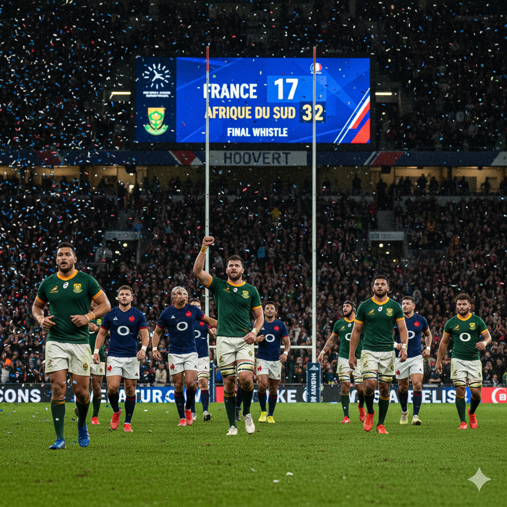

Les actualités de la semaine
A l'affiche

FRANCE vs AFRIQUE DU SUD Samedi 8 novembre 2025 – Score
final : France 17 – Afrique du Sud 32 Les Sud-Africains, réduits à 14 joueurs après l’expulsion
de Lood de Jager, ont renversé le
cours du jeu en seconde période.

Victoire Bleue sur le Pacifique : Le XV de France domine les Fidji (34-21)
Dans un match où le rythme fut intense, le XV de France a confirmé sa bonne forme en s'imposant face à
une vaillante équipe des Fidji sur le score de 34 à 21 .
A propos